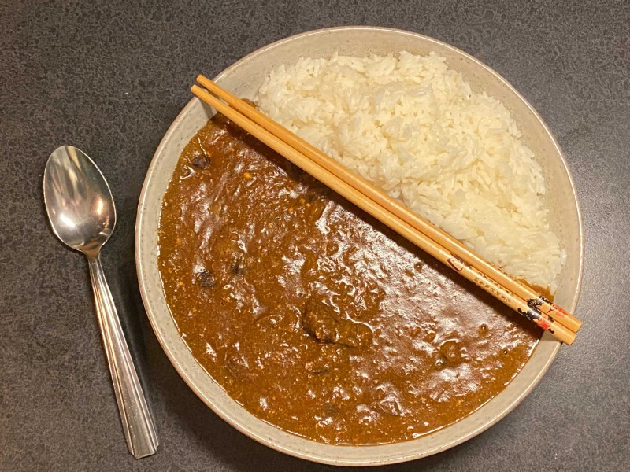

Leblanc Curry

Leblanc Curry from the famous Persona 5 video game
Enjoy the signature dish from Café Leblanc! This dish tastes as great as it smells.
Ingredients
- 1 tbsp vegetable oil
- 2 onions, diced
- 1 carrot, grated
- 1/2 apple, grated
- 2 cloves of garlic, minced
- 2 cm piece of ginger, grated
- 500g cubed stewing beef
- 4 tbsp plain flour
- 2 tsp ground cumin
- 2 tsp ground coriander
- 2 tsp ground turmeric
- 1 tsp ground cardamom
- 1 tsp ground cinnamon
- 1/2 tsp hot chili powder
- 1/2 tsp ground nutmeg
- 1/4 tsp ground clove
- 1/4 tsp black pepper
- 200ml red wine
- 600ml beef stock
- 1 bay leaf
- 10g chocolate
- 1 tsp instant coffee
- 1 tbsp Worcestershire sauce
- 75g plain yogurt
- 1 tbsp honey
- 10g butter
Steps
- Finely dice the onion and heat a tbsp of vegetable oil in a pan.
- Cook onions on low heat until softened and then increase to a medium heat until golden brown.
- Add the minced garlic, grated carrot, ginger, and apple. Cook for 2 minutes. Set aside.
- In a clean pan, fry the beef over medium heat until browned on all sides. Set aside.
- Dry-fry the flour until golden and add the other spices and fry for 1-2 minutes on medium heat until fragrant.
- In a pan with a lid over medium heat, add the spice mix, onion mix, and beef. Combine.
- Add the red wine, stock, and bay leaf. Bring to a boil. Turn down heat and leave on a gentle simmer with the lid on for 90 minutes-2 hours, until beef is falling apart.
- Add the coffee, chocolate, yogurt, honey, and worcestershire sauce. Simmer with lid off for 15 minutes
- Take off heat and remove the bay leaf. Stir in the butter and season with salt and pepper to taste. Serve with rice